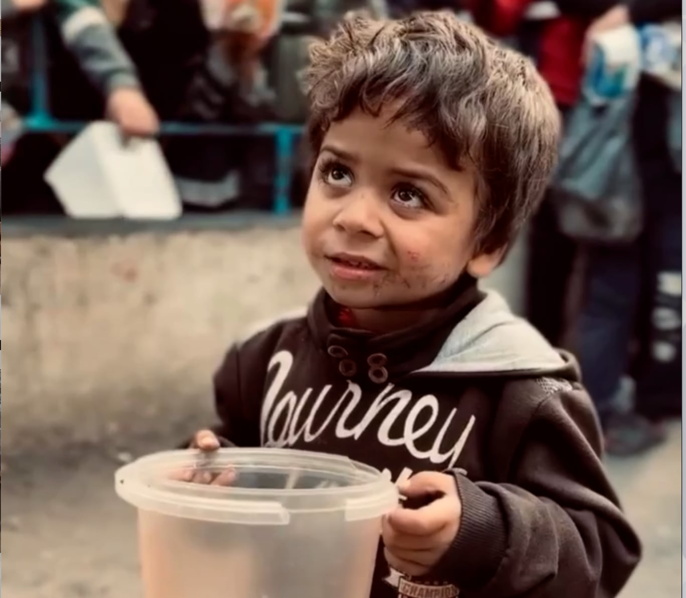
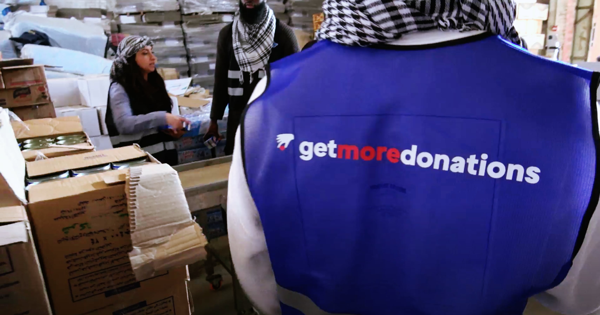
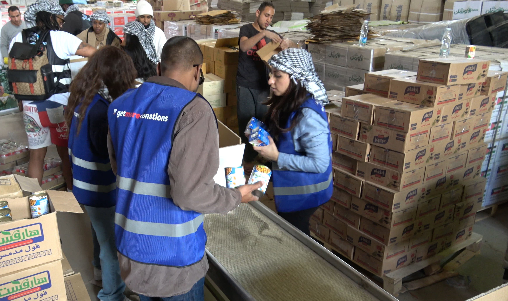
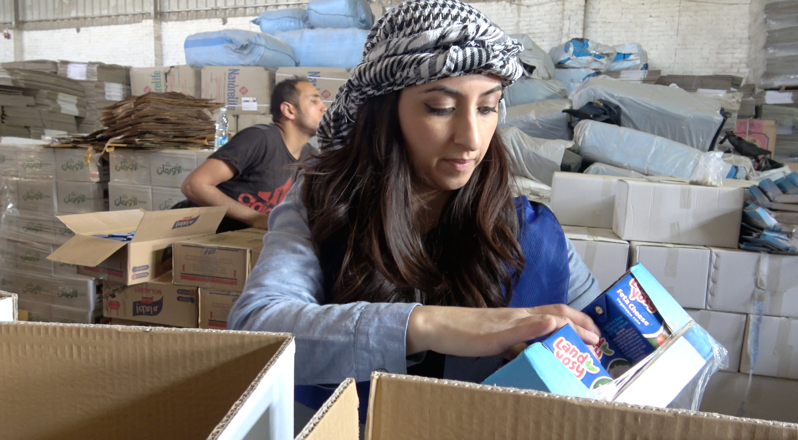

In the middle of the current crisis, Gaza is under a siege that has trapped thousands of children.
With the increasing air raids and violence, the situation has worsened.
Unfortunately, children are bearing the brunt of these dire circumstances.
We have a clear and simple mission: to deliver nutritious food and clean water to the people who are most in need of it, giving them not only nourishment but also a glimpse of optimism in their difficult times.

In spite of the daunting challenges, we are proud to share that we provide essential food aid to those in need. This aid includes canned meat, cheese, water, loose milk, canned beans, dry dates, and black honey.
These items can provide a source of nutrition and sustenance to those who are struggling to make ends meet.
In the harsh reality of Gaza, this aid is more than just food. It’s a symbol of unity, a promise of solidarity, and a beacon of assurance that they are not forgotten in these trying times.
-
+30,000
lives have been tragically lost in Gaza since October 7th.
-
Over 40%
casualties in Gaza are children.
-
+8,600
children in Gaza have been injured, as a result of the crisis.

The innocent children are not only battling pollution, dehydration, and starvation but also the mental trauma from the violence they witness daily.
The fear of air raids that could shatter their lives at any moment is constant.
Yet, there is hope. By donating, you can alleviate the harsh realities of Gazan families.

Your contribution can prevent children from consuming contaminated water, provide food and shield them from needless deaths.
A single act of generosity can drastically change lives in Gaza.
No contribution is too small to make a difference.

The funds raised are directly utilized to assist those in crisis and raise global awareness of their struggles. Together, we can bring significant change to Gaza.
Donate Now